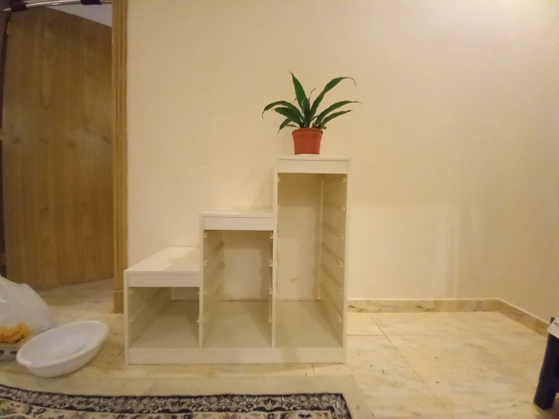

Turn Old drawer cabinet into a plant house
This is a project i was planing to do since last December. I finally started on Jan 5, 2021. What start this is that I have two identical drawerless cabinets that just sit there sucking space. i wanted to use them in a way that give them meaning in the apartment.
I decided to experement with one by turning it into a plant house. First thing was to bring the cabinet out from the bedroom and into the living room. Then i bought a snake plant as a starter and add it to the top shelf. 
After reading more about it it seems that snake plant can live happly in low light areas so i
might change the position.

- buy mirrors (maybe)
- buy more plants